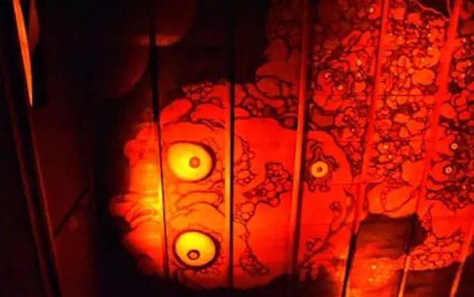

|

|
LE MUSÉE DES FANTÔMES JAPONAIS
Le terme yōkai (« apparition étrange », « spectre » ou « monstre ») désigne tout ce qui se rapporte à des phénomènes étranges ou anormaux, dont l'existence dépasse la compréhension humaine, dans les croyances populaires transmises par l'intermédiaire de la littérature ou la culture orale au Japon. Ce musée retrace les légendes de certains de ces spectres avec des maquettes et manequins en cire grandeur nature. Découvrez toute cette culture à travers ce lieux unique au monde.
|